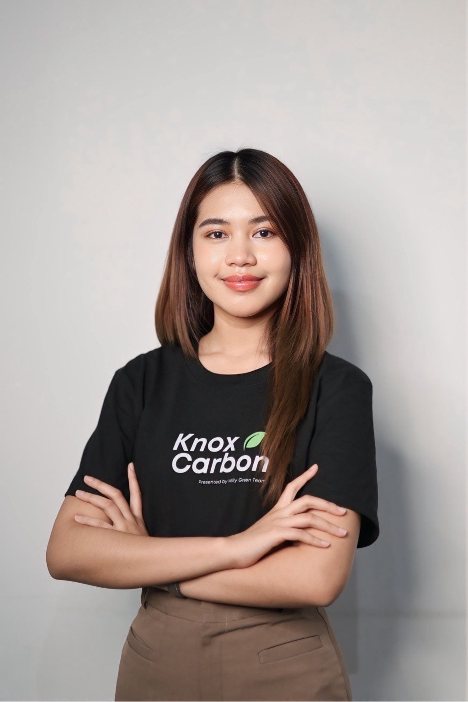

DevPool 2569 · แนะนำตัว
วิศวกร 5 · ผู้พัฒนาแพลตฟอร์ม carbonMICE · GEMs Team#6
อยากเข้าใจการสร้างผลิตภัณฑ์ดิจิทัลตั้งแต่ต้นจนจบ และนำทักษะการเขียนโค้ดมาต่อยอดแพลตฟอร์มจัดการคาร์บอนสำหรับงานอีเวนต์

ปัจจุบันเป็นวิศวกร ระดับ 5 สังกัด ผสอ. กวว. ฝวบ. ก.1 ของ PEA สนใจการการพัฒนาผลิตภัณฑ์ดิจิทัล และกระบวนการทำงานรูปแบบ agile
ดูแลและพัฒนา carbonMICE แพลตฟอร์มบริหารจัดการคาร์บอน สำหรับงานอีเวนต์แบบครบวงจร ตั้งแต่วัดและติดตามคาร์บอนฟุตพริ้นท์ ชดเชยคาร์บอน ไปจนถึงจัดทำเอกสารขอรับรอง Carbon Neutral Event ตามหลักเกณฑ์ของ อบก. (TGO)
อยากต่อยอดจากความรู้ที่เคยเรียนใน Design Pool มาสู่ทักษะการเขียนโค้ด เพื่อเข้าใจการสร้างผลิตภัณฑ์ดิจิทัลให้ครบวงจรมากขึ้น
หัวใจของ carbonMICE คือ แพลตฟอร์ม การที่เจ้าของผลิตภัณฑ์เข้าใจการเขียนโค้ด จะช่วยให้ออกแบบ ตัดสินใจ และสื่อสารกับทีมพัฒนาได้ดีขึ้น
ทักษะนี้นำไปต่อยอดกับ โปรเจกต์อื่น ๆ ของการไฟฟ้า ในงานพัฒนาระบบดิจิทัลได้อีกด้วย